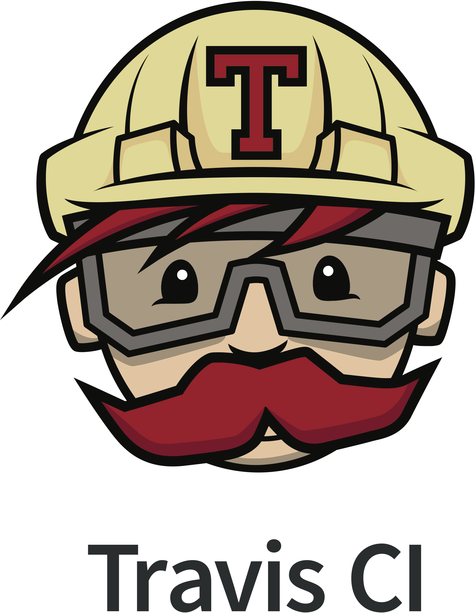
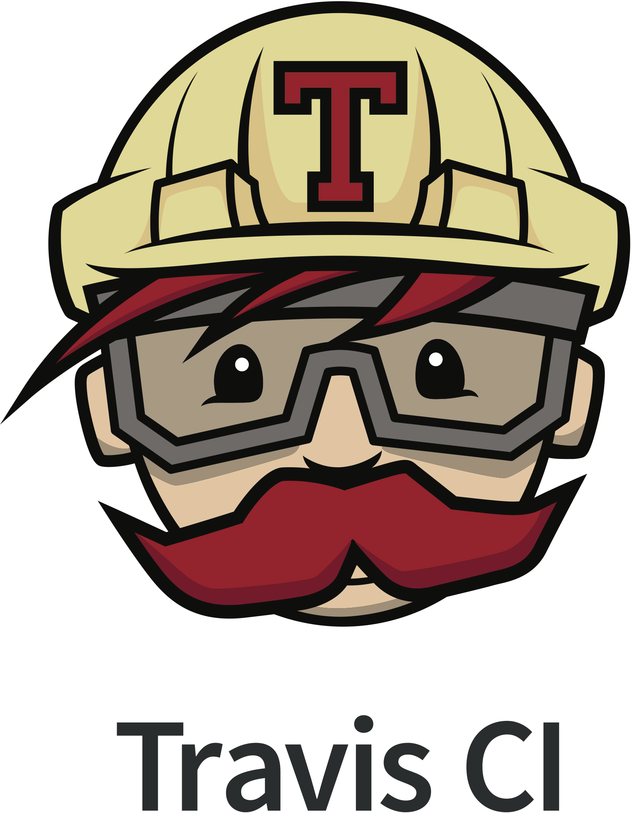
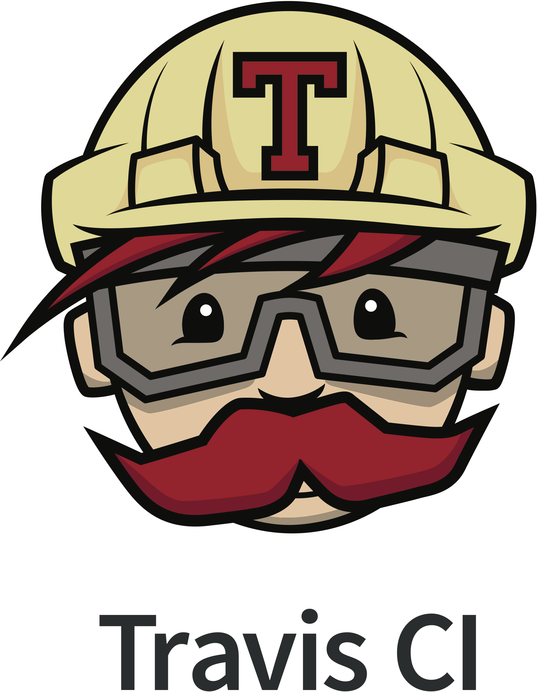

Tech Stack


 


I'm Martha, a junior full-stack web developer based in East London. I like solving problems, building inclusive software, playing music and reading books. I'm a part of the Founders and Coders community, regulary attend meet-ups and love collaborating with others. Here you can find a little more about me, see a few of my favourtie projects and get in contact.
